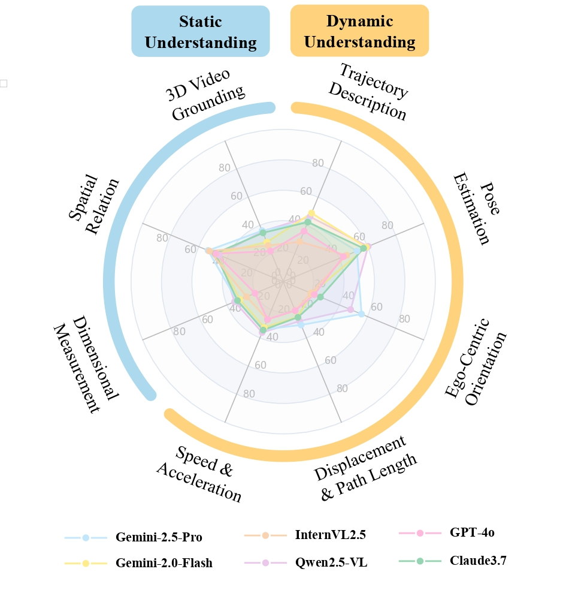
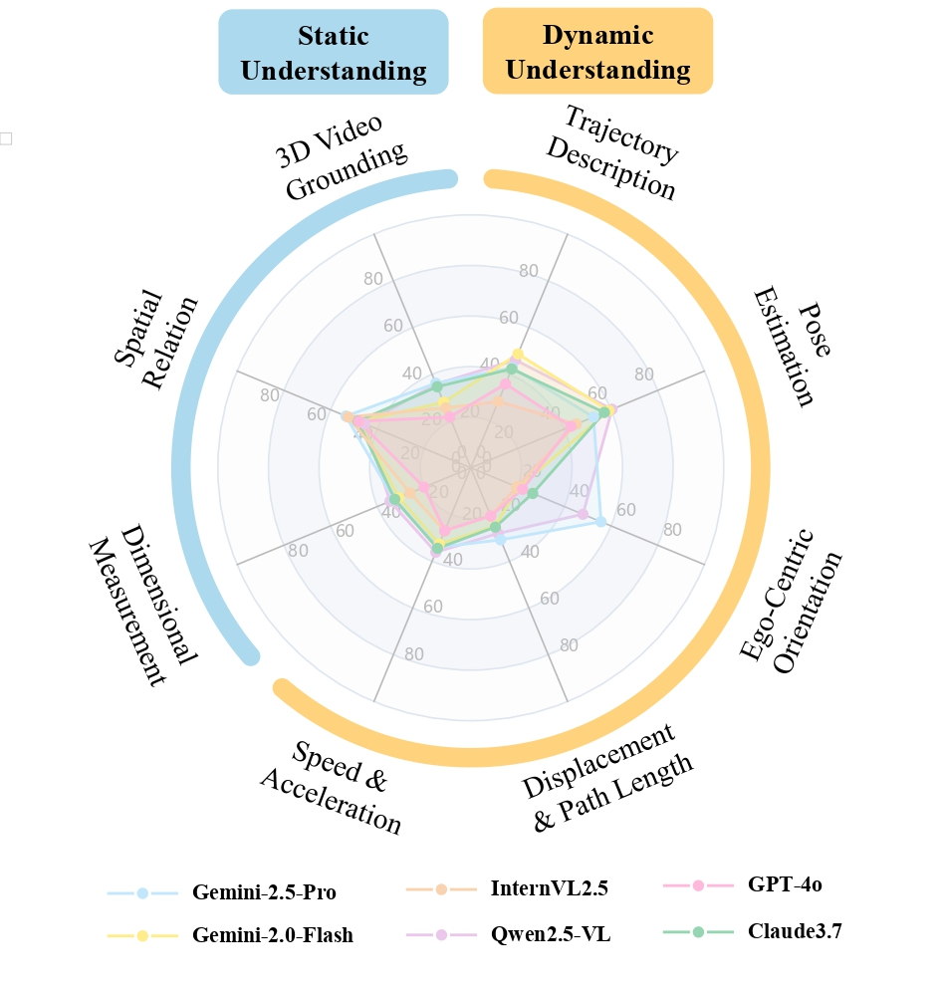
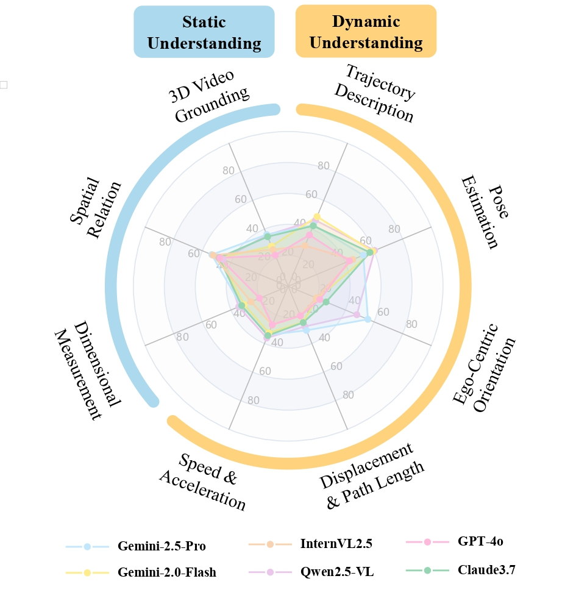

Results
 

Here is the results information.
The use of Multimodal Large Language Models (MLLMs) as an end-to-end solution for Embodied AI and Autonomous Driving has become a prevailing trend. While MLLMs have been extensively studied for visual semantic understanding tasks, their ability to perform precise and quantitative spatial-temporal understanding in real-world applications remains largely unexamined, leading to uncertain prospects. To evaluate models' Spatial-Temporal Intelligence, we introduce ST-Bench, a benchmark designed to evaluate MLLMs' spatial-temporal understanding through challenging tasks such as estimating and predicting the appearance, pose, displacement, and motion of objects. Our benchmark encompasses a wide range of robot and vehicle operations across desktop, indoor, and outdoor scenarios. The extensive experiments reveals that the state-of-the-art MLLMs still struggle in real-world spatial-temporal understanding, especially in tasks requiring precise distance estimation and motion analysis.
We have divided the questions into Static Understanding and Dynamic Understanding, and further give definitions to 8 different tasks.
Dimensional Measurement. Concerns estimates of an object's geometric size, such as length, width, and height, as well as the distance between objects or between the camera and an object.
Example: “What is the height of this box?” or “How close is the camera to the table?”
Spatial Relation. Focuses on identifying spatial relationships among objects or between the camera and an object, including front and back, left and right, up and below.
Example: “Is the chair on the left or right side of the table?” or “What is the position of the red bag relative to the fur sofa?”
3D Video Grounding. Given a semantic description such as “the red backpack on the brown sofa,” the goal is to retrieve the object's 3D bounding box in the camera coordinate system at a specific point in the video.
Example: “Locate the 3D bounding box of the red suitcase near the bed.”
Comparison of ST-Bench with existing benchmarks. Data represents the source of our QA data, where V stands for Video and I stands for Image. Env. indicates the environment in which the data is generated, where S represents Simulation and R represents Real. The two columns under View indicate whether the dataset includes Ego-centric and Allocentric perspectives. The two columns under Evaluation specify whether the ground truth is presented in numerical or textual form. The four columns under Spatio-Temporal indicate whether the benchmark evaluates spatial distance, direction (with angular precision), velocity, or a precise and comprehensive trajectory description.
I. Data Collection Collected data from Desktop, Indoor, and Outdoor scenarios using Omni6DPose for 6D object pose estimation, ScanNet for indoor 3D scene reconstruction, and Waymo for autonomous driving. These datasets provide frame-by-frame camera parameters and point clouds.
II. Automatic QA Pair Generation Generated QA pairs with MLLMs using detailed object descriptions and computed ground-truth information for each task. This process produced a diverse set of questions and challenging answer options.
III. Human Quality Control Conducted human quality control to filter and refine QA pairs, addressing issues like inaccurate descriptions and insufficient video information. This ensured high-quality questions and shuffled answer options for robust evaluation.
IV. Fine-Grained Adjustment Adjusted QA pairs with scaling factors to match the precision needs of different scenarios, from millimeters for desktop settings to meters for outdoor environments. This fine-grained adjustment helps train and evaluate MLLMs effectively.

Here is the results information.
What is the velocity of the object?
We introduced ST-Bench, a comprehensive benchmark to assess MLLMs’ spatial-temporal understanding through over 300 real-world videos and 2,000 QA pairs of robot desktop, indoor, and outdoor scenarios. Experiments show that, while state-of-the-art MLLMs handle basic pose estimation and object grounding competently, they often struggle with more fine-grained tasks such as precise distance and velocity estimation, displacement tracking, and ego-centric orientation. These shortcomings appear to stem from issues like sparse temporal sampling in pretraining, insufficient 3D annotations, and a lack of dedicated physical reasoning modules. By highlighting these gaps, ST-Bench provides a valuable platform for guiding future research on strengthening spatial-temporal understanding in MLLMs — an essential step toward improving their applicability in complex real-world applications.